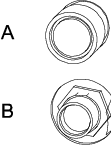
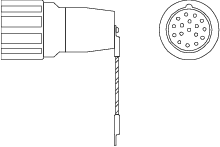

hot plug 选项可以：
将微动控制装置从自动模式的系统断开连接，从而在未连接微动控制装置的情况下运行系统。
在不干扰系统上应用程序运行情况下临时连接并操作微动控制装置。
警告 按下 hot plug 按钮禁用 FlexPendant 上的紧急停止按钮。 连接或者中断 FlexPendant 只需按下 hot plug 按钮。 |
警告 断开的 FlexPendant 必须随时在 IRC5 控制器之外进行保存！ |
以下步骤说明如何使用 hot plug 按钮选项在自动模式下连接或者中断系统上的 FlexPendant。
 | 注意 系统在没有 FlexPendant 的情况下运行时切勿切换至手动模式（或者手动全速模式）。 当您切换至自动模式时必须要连接 FlexPendant，否则您不能确认模式转换。 |
操作 | Information | |
1 | 确保系统处于自动模式。 | |
2 | 按住 hot plug 按钮。 | 按下按钮时，该按钮里面的红灯会亮起。 |
3 | 按住 hot plug 按钮，并同时在跳线插与 FlexPendant 连接器之间切换。 |  A: Hot plug 按钮 B： FlexPendant 连接器  跳线插 |
4 | 松开 hot plug 按钮。 | 确保按钮没有在启动位置被卡住，因为这样会禁用 FlexPendant 紧急停止按钮。 |
| 注意 FlexPendant 断开时，跳线插必须替代它进行连接。 |
| 注意 如果松开 hot plug 按钮后却没有连接跳线插或 FlexPendant，此时机器人将中止行动，因为紧急停止链被打开。 |
使用 hot plug 选项时，将对 FlexPendant 上的信息执行以下限制：
一些应用程序可能需要操作员使用 FlexPendant 输入信息（例如使用 RAPID 指令 TPReadNum、UIMsgBox 等的程序）。 如果应用程序遭遇此类操作员信息，程序执行将处于等待状态。 连接 FlexPendant 之后，您必须停下来启动程序执行，才能看见并回复这些信息。 它们不会在连接 FlexPendant 之后自动显示。
如果可能，在编程系统使用 hot plug 按钮选项时，避免使用此类指令。
连接 FlexPendant 时，FlexPendant 断开期间仍然可以看见事件日志，因为都被保存在控制器上面。